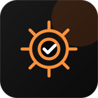

Missão
Desenvolver aplicações web seguras desde a concepção e levar conhecimento em segurança da informação à comunidade, por meio de consultoria, capacitação, prestação de serviço e projetos de engenharia.
O Bunker AppSec é um projeto de extensão que constrói aplicações web seguras desde a concepção — unindo engenharia de software, Security by Design e colaboração aberta.
Repositório público · github.com/dahlinpereira/bnk-appsec
Desenvolver aplicações web seguras desde a concepção e levar conhecimento em segurança da informação à comunidade, por meio de consultoria, capacitação, prestação de serviço e projetos de engenharia.
Ser reconhecida como referência entre as startups acadêmicas do IFSP Campus Guarulhos no desenvolvimento de soluções web seguras, abertas e com impacto social.
Analisamos sua aplicação ou ideia e indicamos caminhos seguros para evoluir.
Saiba maisOficinas e conteúdos para equipes e estudantes aprenderem desenvolvimento seguro.
Saiba mais
Desenvolvemos sites e sistemas web com segurança aplicada desde o início.
Saiba mais
Planejamos e construímos soluções completas, do levantamento à entrega.
Saiba maisPapel na equipe
Resumo do perfil profissional em uma ou duas frases.
Ver personaPapel na equipe
Resumo do perfil profissional em uma ou duas frases.
Ver personaPapel na equipe
Resumo do perfil profissional em uma ou duas frases.
Ver personaPapel na equipe
Resumo do perfil profissional em uma ou duas frases.
Ver personaDesenvolvemos uma aplicação web real, com foco em confiabilidade, proteção de dados e decisões técnicas que se sustentam.
Segurança é requisito, não correção. Ela nasce na modelagem e acompanha cada escolha de arquitetura.
Código limpo, revisão por pares e documentação para manter o projeto compreensível e evolutivo.
Branches, commits e Pull Requests. O mesmo fluxo de trabalho de um time profissional.
Controles de segurança em cada etapa: requisito, desenvolvimento, revisão e entrega.
O aprendizado sai do campus: documentação aberta, troca com a comunidade e formação de novos desenvolvedores.
Sem senhas, tokens ou chaves privadas no código. Segurança também é disciplina de time.
“Desenvolvimento de software com segurança desde a concepção.”
Princípio do Bunker AppSec
Compartilhar o que aprendemos por meio de documentação, conteúdo aberto e conversas sobre segurança web.
Manter o projeto público para que outras pessoas possam estudar, usar como referência e contribuir.
Mostrar na prática como uma aplicação nasce segura — e não como um remendo aplicado no final.
Estrutura semântica e acessível, com foco em conteúdo bem organizado.
Layout responsivo, design system em variáveis e atenção à legibilidade.
Interações leves, sem dependências desnecessárias e com foco em performance.
Framework front-end moderno para estruturação responsiva e componentes acessíveis.
Versionamento, branches e Pull Requests como parte do processo de engenharia.